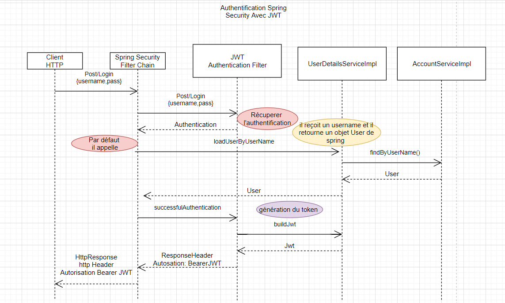

You can find the technical documentation of each part of the application here:
An image is worth a thousand words, so here is a sequence diagram of how the whole application is working:
And here is the detailed fonctioning of the authentication server:
J’ai utilisé spring boot parce que c’est framework bien connu des développeurs java pour les nombreuses fonctionnalités qu’il apporte sur les aspects web ,sécurité et batch..
Je l’ai utilisé pour :
Framework de sécurité léger qui fournit une authentification et un support d’autorisation.
C’est un module incontournable d’une application developpé en spring, Il apporte tout le nécessaire pour sécuriser une application et il a l’avantage d’être vraiment personnalisable. Spring Security n’intervient que sur le domaine applicatif.
j’ai utilisé Maven qui est l’outil de construction de projet le plus célèbre est sans aucun doute
Les principales phases dans Maven sont :
je l’ai utilisé principalement pour gérer automatiquement les dépendances logicielles. Pour développer des applications Java EE, nous allons avoir besoin de bibliothèques externes (les fichiers .jar en Java). Plutôt que d'aller les télécharger une à une depuis le Web et de les ajouter dans Eclipse, nous allons signaler à Maven l'identifiant des dépendances dont nous aurons besoin et il va se charger pour nous de les télécharger depuis un référentiel centralisé (Maven central repository), de les stocker dans un cache sur la machine et de les associer à notre projet.
J’ai utilisé Javadoc comme outil fourni par Sun avec le JDK pour permettre la génération d'une documentation technique à partir du code source.
pour la génération des tokens et l’identification des utilisateurs.
Nous avons utilisé NestJs qui est un framework backend basé sur NodeJs. Ce framework est très orienté objet, et utilise une syntaxe très proche de celle d'angular, ce qui facilite le développement lorsque l'on doit passer du frontend au backend.
Nous avons utilisé Swagger pour générer la documentation de l'API REST du serveur applicatif. Dans le code, il suffit de placer des "décorateurs" (en quelque sorte des extensions de classe), qui seront interpretés à la compilation pour générer une documentation technique au format HTML.
Il s'agit d'un outil pour décrire une documentation technique, en Yaml ou Json, pour potientiellement tout type d'API. Nous l'avons en l'occurence utilisé pour rédiger la documentation des échanges websockets entre le client et le serveur.
Nous avons utilisé Angular pour générer l'application frontend. Le framework permet de créer des interfaces et d'intéragir avec une API de manière simplifiée et structurée.